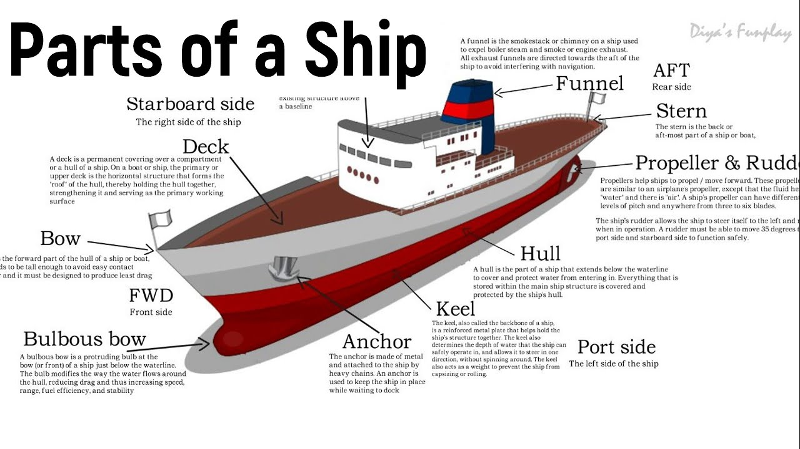

A ship is like a floating city having several different parts. However, we can’t imagine a ship without its three main parts: The Hull, an engine room and a navigation bridge.
A ship comprises both visible as well as invisible parts. E.g. rudder, anchor, bow, keel, accommodation, propeller, mast, bridge, hatch coves and bow thrusters are some common visible parts. In contrast, bulkheads, frames, cargo holds, hopper tank double bottom, girders, cofferdams, side shell etc., are the invisible parts of a ship.
